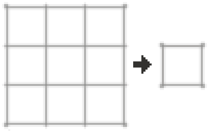
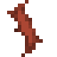
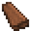
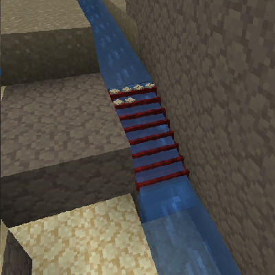

洗礦槽
The 洗礦槽是一種用來處理礦石沉積物的裝置, 它可以得到與淘金一樣的產物.



洗礦槽使用木棍和木材製作.
洗礦槽被放置後會佔據兩個方塊。為了讓它正常工作, 水必須流過洗礦槽的頂部並從底部流出。如果水看起來流過了整個洗礦槽, 它就在正常工作. 流進洗礦槽的水必須是水流的最後一格水, 並且在洗礦槽的底下必須有一個空方塊讓水能夠流進去.

一個正確安裝的洗礦槽.
要使用洗礦槽, 你需要把沉積物的物品丟棄到水流中, 並且讓水流將物品衝進去. 沉積物會出現在洗礦槽中, 然後過一段時間, 洗礦的產物就有可能從底部吐出.

一個正常工作的, 裡面有沉積物的洗礦槽.